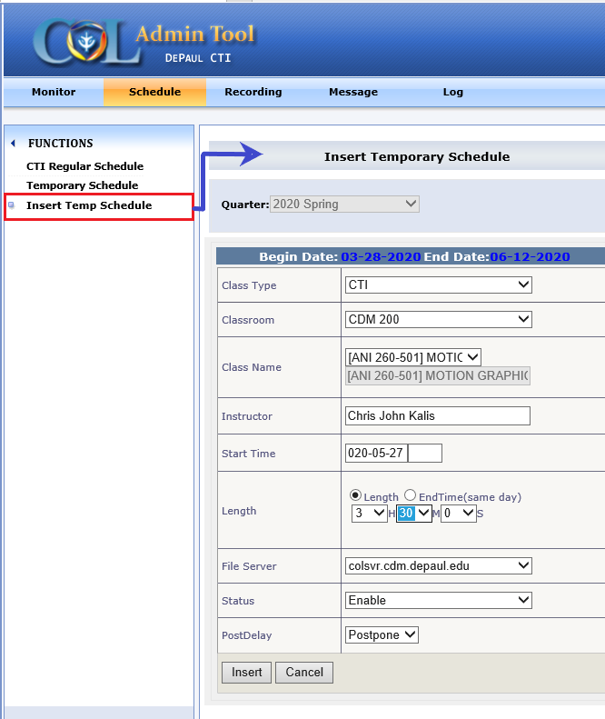
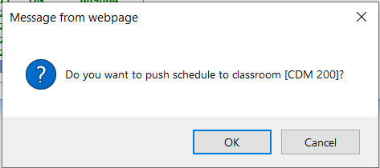
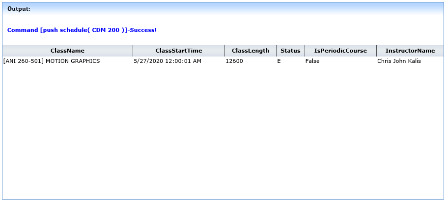
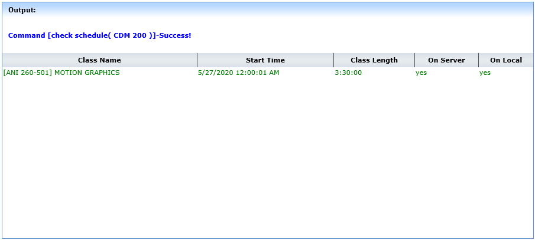

To insert the future requested recording into the automatic recording schedule for a classroom. Some specific steps needed to be followed in order to insert temp schedule.
✺ Step 1 :Creates an entry for the recording on the RA website.
✺ Step 2 :Writes (or “pushes”) that entry to that PPC’s local recording schedule. Note that the Push Schedule command can only be carried out when the room’s ENGINE status is IDLE, PROC or UPLO, it does not work if the Engine is RECO or OFFLINE.
On the RA website, go to Schedule > “Insert Temp Schedule” and fill out the information as per steps guidelines below:
► Steps to insert temp Schedule
1. On the RA website Monitor page, select the room/lab where the recording was added
2. Click on “Check Schedule” (under Advanced Functions)
3. Re-verify that the Course ID, Start Date and Time and Class Length are as expected
4. Now click on“Push Schedule”, and click OK to confirm – it should complete successfully. This will input or “push” the scheduled recording to that local PPC.
5. After entering ok on Confirmation box user can see Push Schedule Success Command output in output window.
6. Click on “Check Schedule” again, and scroll down; the newly added recordings should now appear in green color, with On Server and On Local both “yes”
